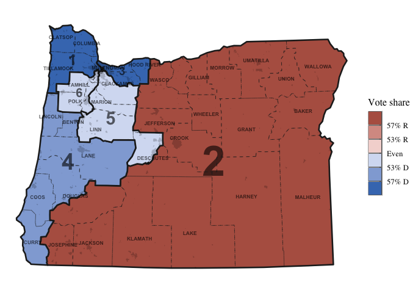

ggredist provides ggplot2 extensions for political mapmaking, including new geometries, easy label generation and placement, automatic map coloring, and map scales, palettes, and themes.
Here’s an example of what you can do with the package.
library(ggredist)
library(ggplot2)
data(oregon)
ggplot(oregon, aes(group=cd_2020)) +
# 'ndv' and 'nrv' contain D and R vote counts
geom_district(aes(fill=ndv, denom=ndv+nrv), linewidth=0.9) +
geom_district_text() +
# can then highlight towns and cities
geom_places(state = 'OR') +
# we can overlay county boundaries and labels
geom_district(aes(group=county), linewidth=0.4, linetype="dashed", fill=NA) +
geom_district_text(aes(group=county, label=toupper(county)),
size=2.2, check_overlap=TRUE) +
scale_fill_party_b(limits=c(0.4, 0.6)) +
theme_map()
#> Warning in grid.Call(C_stringMetric, as.graphicsAnnot(x$label)): font family not
#> found in Windows font database
#> Warning in grid.Call(C_stringMetric, as.graphicsAnnot(x$label)): font family not
#> found in Windows font database
#> Warning in grid.Call(C_textBounds, as.graphicsAnnot(x$label), x$x, x$y, : font
#> family not found in Windows font database
#> Warning in grid.Call(C_textBounds, as.graphicsAnnot(x$label), x$x, x$y, : font
#> family not found in Windows font database
See more in the reference.
Installation
You can install the development version of ggredist from GitHub with:
# install.packages("remotes")
remotes::install_github("alarm-redist/ggredist")